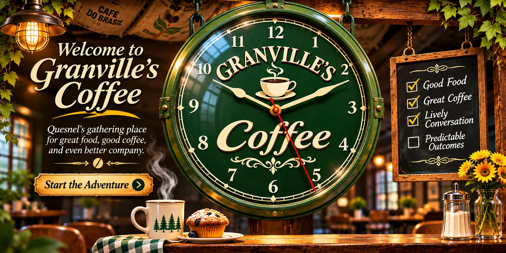
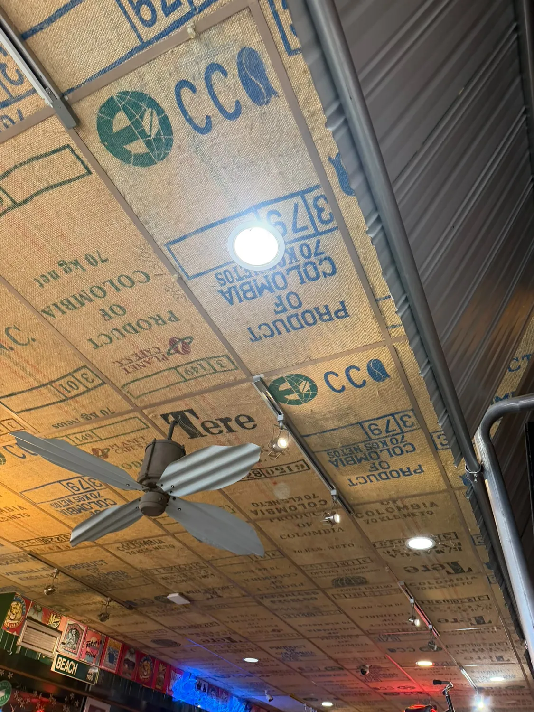

Quesnel, British Columbia · Unofficial headquarters of everybody
Come for coffee. Leave with 11 opinions.
Locals come for coffee, food, gist and gossip. Newcomers make friends so quickly they forget they're new. Ask for directions and you'll get seven routes, three warnings, and an invitation to lunch.
The clock keeps time. Ted keeps the stories coming.

COFFEE ✳ CONVERSATION ✳ COMPLETELY UNSOLICITED ADVICE ✳ POSSIBLY TRUE GOSSIP ✳ GOOD FOOD ✳ NEW FRIENDS ✳ COFFEE ✳ CONVERSATION ✳ COMPLETELY UNSOLICITED ADVICE ✳ POSSIBLY TRUE GOSSIP ✳ GOOD FOOD ✳ NEW FRIENDS ✳
✳ GRANVILLE'S · UNOFFICIAL TOWN HALL ✳ OPEN TO STRANGERS, FRIENDS & PEOPLE WHO KNOW GARY
THE SOCIAL NETWORK THAT DOESN'T REQUIRE WI-FI
One table. A thousand stories.
In Quesnel, a cup of coffee can turn into a friendship, a fishing forecast, or seven conflicting directions. Pull up a chair. The plot is already in progress.
STRANGERS WHO STAY STRANGERS00Unofficial estimate. We haven't checked.
✳
♥
✺
“Is this seat taken?”
🧑🦳
THE REGULAR
“Not anymore!”
🧑🏽
THE NEWCOMER
“I know a shortcut…”
👩🏻🦰
THE DIRECTIONS EXPERT
☕〰
THE COMMUNITY TABLESeats: somehow always one more
You came for coffee. You've been invited to somebody's barbecue.
TODAY'S COMPLETELY UNOFFICIAL REPORT
“A traveller asked where the highway was. Four locals answered. None agreed. All offered to drive them.”
Illustrated characters and conversations are fictional. The welcome is the point. Real food appears in the next act ↓
AN INTERACTIVE TALE FROM THE UNOFFICIAL QUESNEL UNIVERSE
The day you accidentally became a local.
Three characters. One suspiciously friendly café. A completely unnecessary quest. Tap a character to hear their side of the story.
“New around here? Sit down. You're late for a friendship you didn't know you had.”
THE GREAT GRANVILLE'S DETOUR
One stop. Three side quests.
Make a fictional friend, solve a food mystery, and survive Quesnel's most confident directions. Your decisions change the ending.
CHAPTER 1 OF 3
🥪
A sandwich has vanished. What do you investigate first?
Mabel, Doug, Alex and their adventures are fictional. The welcome is the point.
✦ THE REAL FOOD · THE FICTIONAL DRAMA ✦
The usual suspects. Now with actual names.
Real dishes reported on Granville's published menu listings, introduced by a narrator who really should get out more.
🥪✳✦
THE SANDWICH DEPARTMENT
Classic Reuben
A sandwich with so much character, it may introduce you to its relatives.
These are reported menu items from third-party listings, not a verified current menu. Selection, recipes, availability and prices may change. For the current selection, please visit the café.
…and walks out knowing half the town, two dogs, and somebody's cousin.
🫂
Illustration placeholder · Not Ted's likeness80 years young. Still causing cake.
Meet the owner · Keeper of the kettle
Ted Martindale. Not your average cup of Ted.
Since 1992, Granville's has been a Quesnel gathering place. Ted built more than a coffee shop: a room where strangers turn into neighbours, and a five-minute visit has a habit of becoming an afternoon.
In 2026, Ted marked his 80th birthday with a nearly 6,000-pound carrot cake. Because apparently a regular birthday cake wouldn't feed enough people—or make enough headlines.
He was also honoured with a small-business award at Quesnel's October 2026 Business Excellence Awards. But the part worth remembering isn't the trophy. It's the generosity, the open door, and the sense that there's always room for one more person.
A few things you'll notice the moment you walk in. Some of them will notice you back.
Look up.The ceiling is upholstered in coffee sacks. Colombia says hello.

Keep looking.A fan, a hundred sacks, and walls that collect stories.The clock.The real one. It keeps better time than the conversations do.When flashing, wave us down.Your food is ready. Your conversation can continue.
THE GRANVILLE'S FIELD GUIDE
Things a map can't tell you.
01 / THE CEILING
Look up.
Yes, those are coffee sacks overhead. Some businesses frame certificates. Granville's went in another direction.
02 / THE CONVERSATION
Bring a question.
Leave with an answer, a second answer, and a spirited debate about the first answer.
03 / THE HOUSE RULE
Walk right in.
No online ordering. No reservation labyrinth. Just a real door and people on the other side.
Department of important nonsense
Games, gossip & other terrible uses of the internet.
We don't take online orders. We do, however, provide completely unnecessary entertainment while you decide to visit in person.
Interactive foolishness #01
The Local Directions Machine
Ask for directions. Receive advice from people who all know a shortcut.
“Turn left where the old hardware store used to be. Unless you're coming from the other side.”
Fictional jokes, not actual navigation. Please use a map to drive.Interactive foolishness #02
Catch the runaway bun
You have 15 seconds. The bun has no intention of cooperating.
Caught: 0Time: 15s
No buns were harmed in the making of this game.
Interactive foolishness #03
Rumour or ridiculous?
Generate a harmless imaginary piece of small-town news.
Breaking: somebody ordered tea. The coffee cups are requesting a meeting.
All rumours are fictional. Real people deserve better.Interactive foolishness #04
How long until you're a local?
Take our scientifically unsupported citizenship test.
Our highly trained committee (one imaginary uncle) is standing by.
No personal information collected. Not legally binding anywhere.
Never before attempted on a café website
The Bottom of the Cup
Every cup at Granville's ends the same way: a little puddle of grounds and a lot of opinions about what it means. Give the cup a swirl. The grounds will gather, settle, and tell you something about your day.
12 symbols are hiding in this cup
The grounds are listening
Your reading appears here.
Press the button, or draw a few circles on the cup with your finger or mouse to swirl it yourself.
For entertainment only. The grounds have no formal training, and a very rare reading is pure gold.
The only call to action that matters
Get in here.
Bring your appetite. Bring your curiosity. Leave your awkward small talk at the door—we've got plenty.